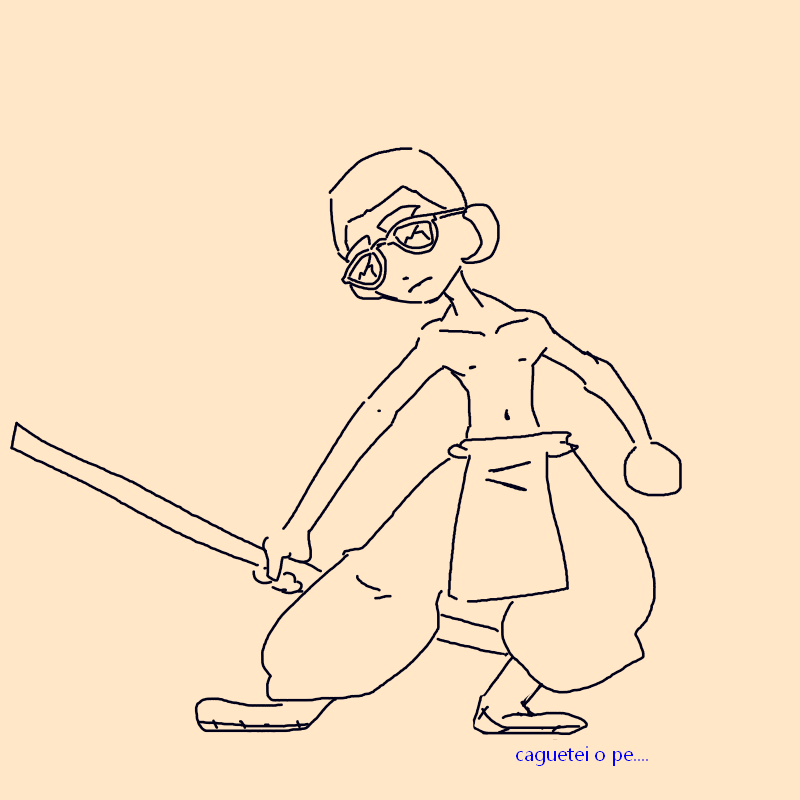

Vitroxa
Criado sábado 16 julho 2022
fui teleportado pra uma montanha cheia de monges, onde me ensinaram as tecnicas supremas da arte monge, mas aconteceu um acidente que fiquei em estado vegetativo por 3 semanas, mas sobrevivi! com isso meus musculos atrofiaram, entao tenho braçinhos molengas!!
